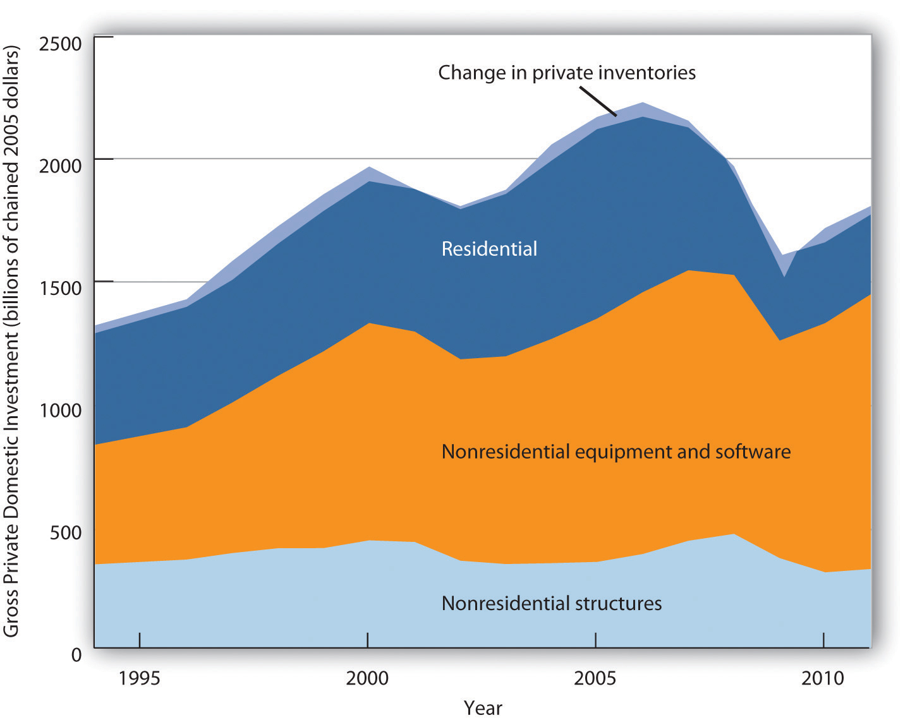
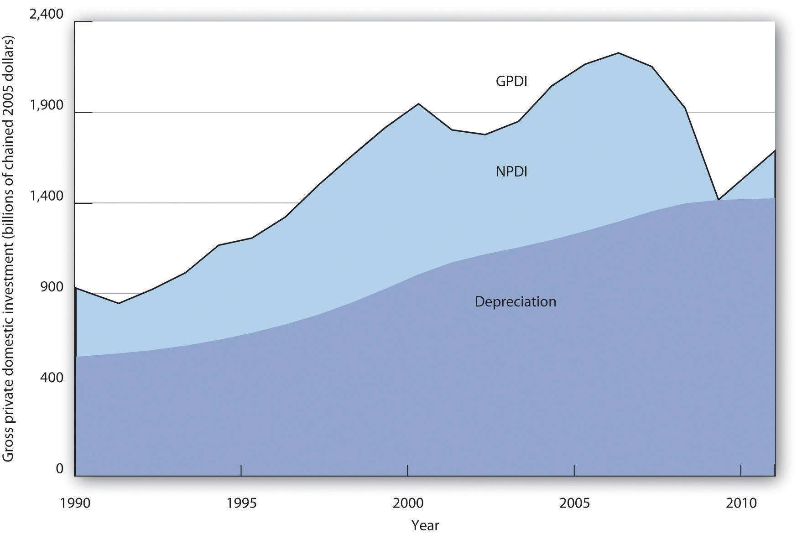
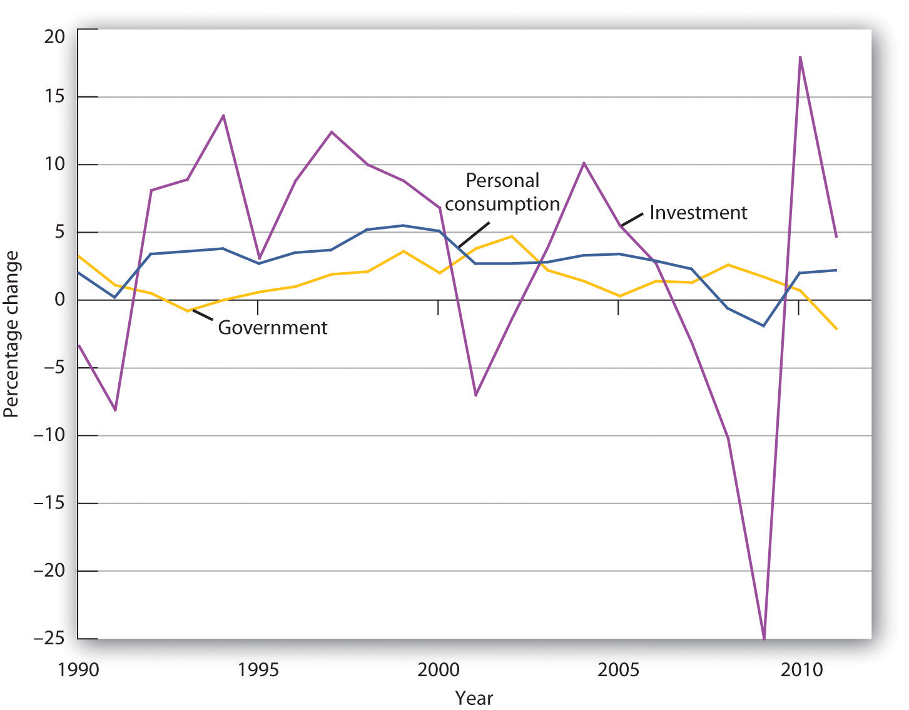
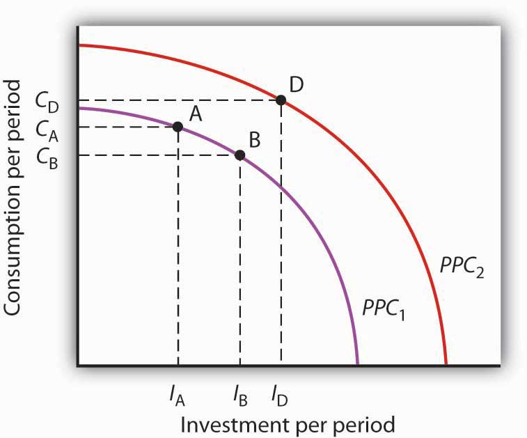

How important is investment? Consider any job you have ever performed. Your productivity in that job was largely determined by the investment choices that had been made before you began to work. If you worked as a clerk in a store, the equipment used in collecting money from customers affected your productivity. It may have been a simple cash register, or a sophisticated computer terminal that scanned purchases and was linked to the store’s computer, which computed the store’s inventory and did an analysis of the store’s sales as you entered each sale. If you have worked for a lawn maintenance firm, the kind of equipment you had to work with influenced your productivity. You were more productive if you had the latest mulching power lawn mowers than if you struggled with a push mower. Whatever the work you might have done, the kind and quality of capital you had to work with strongly influenced your productivity. And that capital was available because investment choices had provided it.
Investment adds to the nation’s capital stock. We saw in the chapter on economic growth that an increase in capital shifts the aggregate production function outward, increases the demand for labor, and shifts the long-run aggregate supply curve to the right. Investment therefore affects the economy’s potential output and thus its standard of living in the long run.
Investment is a component of aggregate demand. Changes in investment shift the aggregate demand curve and thus change real GDP and the price level in the short run. An increase in investment shifts the aggregate demand curve to the right; a reduction shifts it to the left.
Additions to the stock of private capital are called Gross Private Domestic Investment (GPDI). GPDI includes four categories of investment:
Figure 29.1 "Components of Gross Private Domestic Investment, 1995–2011" shows the components of gross private domestic investment from 1995 through 2011. We see that producers’ equipment and software constitute the largest component of GPDI in the United States. Residential investment was the second largest component of GPDI for most of the period shown but it shrank considerably during the 2007–2009 recession and has yet to recover.
Figure 29.1 Components of Gross Private Domestic Investment, 1995–2011
This chart shows the levels of each of the four components of gross private domestic investment from 1995 through 2011. Nonresidential equipment and software is the largest component of GPDI and has shown the most substantial growth over the period.
Source: Bureau of Economic Analysis, NIPA Table 1.1.6 (revised February 29, 2012).
As capital is used, some of it wears out or becomes obsolete; it depreciates (the Commerce Department reports depreciation as “consumption of fixed capital”). Investment adds to the capital stock, and depreciation reduces it. Gross investment minus depreciation is net investment. If gross investment is greater than depreciation in any period, then net investment is positive and the capital stock increases. If gross investment is less than depreciation in any period, then net investment is negative and the capital stock declines.
In the official estimates of total output, gross investment (GPDI) minus depreciation equals net private domestic investment (NPDI). The value for NPDI in any period gives the amount by which the privately held stock of physical capital changed during that period.
Figure 29.2 "Gross Private Domestic Investment, Depreciation, and Net Private Domestic Investment, 1990–2011" reports the real values of GPDI, depreciation, and NPDI from 1990 to 2011. We see that the bulk of GPDI replaces capital that has been depreciated. Notice the sharp reductions in NPDI during the recessions of 1990–1991, 2001, and especially 2007–2009.
Figure 29.2 Gross Private Domestic Investment, Depreciation, and Net Private Domestic Investment, 1990–2011
The bulk of gross private domestic investment goes to the replacement of capital that has depreciated, as shown by the experience of the past two decades.
Source: Bureau of Economic Analysis, NIPA Table 5.2.6 (revised February 29, 2012).
Investment, measured as GPDI, is among the most volatile components of GDP. In percentage terms, year-to-year changes in GPDI are far greater than the year-to-year changes in consumption or government purchases. Net exports are also quite volatile, but they represent a much smaller share of GDP. Figure 29.3 "Changes in Components of Real GDP, 1990–2011" compares annual percentage changes in GPDI, personal consumption, and government purchases. Of course, a dollar change in investment will be a much larger change in percentage terms than a dollar change in consumption, which is the largest component of GDP. But compare investment and government purchases: their shares in GDP are comparable, but investment is clearly more volatile.
Figure 29.3 Changes in Components of Real GDP, 1990–2011
Annual percentage changes in real GPDI have been much greater than annual percentage changes in the real values of personal consumption or government purchases.
Source: Bureau of Economic Analysis, NIPA Table 1.1.1 (revised February 29, 2012).
Given that the aggregate demand curve shifts by an amount equal to the multiplier times an initial change in investment, the volatility of investment can cause real GDP to fluctuate in the short run. Downturns in investment may trigger recessions.
Earlier we used the production possibilities curve to illustrate how choices are made about investment, consumption, and saving. Because such choices are crucial to understanding how investment affects living standards, it will be useful to reexamine them here.
Figure 29.4 "The Choice between Consumption and Investment" shows a production possibilities curve for an economy that can produce two kinds of goods: consumption goods and investment goods. An economy operating at point A on PPC1 is using its factors of production fully and efficiently. It is producing CA units of consumption goods and IA units of investment each period. Suppose that depreciation equals IA, so that the quantity of investment each period is just sufficient to replace depreciated capital; net investment equals zero. If there is no change in the labor force, in natural resources, or in technology, the production possibilities curve will remain fixed at PPC1.
Figure 29.4 The Choice between Consumption and Investment
A society with production possibilities curve PPC1 could choose to produce at point A, producing CA consumption goods and investment of IA. If depreciation equals IA, then net investment is zero, and the production possibilities curve will not shift, assuming no other determinants of the curve change. By cutting its production of consumption goods and increasing investment to IB, however, the society can, over time, shift its production possibilities curve out to PPC2, making it possible to enjoy greater production of consumption goods in the future.
Now suppose decision makers in this economy decide to sacrifice the production of some consumption goods in favor of greater investment. The economy moves to point B on PPC1. Production of consumption goods falls to CB, and investment rises to IB. Assuming depreciation remains IA, net investment is now positive. As the nation’s capital stock increases, the production possibilities curve shifts outward to PPC2. Once that shift occurs, it will be possible to select a point such as D on the new production possibilities curve. At this point, consumption equals CD, and investment equals ID. By sacrificing consumption early on, the society is able to increase both its consumption and investment in the future. That early reduction in consumption requires an increase in saving.
We see that a movement along the production possibilities curve in the direction of the production of more investment goods and fewer consumption goods allows the production of more of both types of goods in the future.
Which of the following would be counted as gross private domestic investment?
Net private domestic investment (NPDI) has been negative during only three periods in the last 80 years. During one period, World War II, massive defense spending forced cutbacks in private sector spending. (Recall that government investment is not counted as part of net private domestic investment in the official accounts; production of defense capital thus is not reflected in these figures.) The second period in which NPDI was negative was the Great Depression.
Aggregate demand plunged during the first four years of the Depression. As firms cut their output in response to reductions in demand, their need for capital fell as well. They reduced their capital by holding gross private domestic investment below depreciation beginning in 1931. That produced negative net private domestic investment; it remained negative until 1936 and became negative again in 1938. In all, firms reduced the private capital stock by more than $529.5 billion (in 2007 dollars) during the period.

A third—very brief and very small—encounter with negative net private domestic investment occurred in 2009, when it fell by $1 billion (in 2005 dollars).
The two graphs in this case present a contrast between the Great Depression and the Great Recession. The Great Recession was bad, but the Great Depression was ever so much worse.